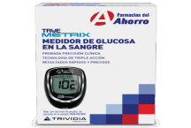
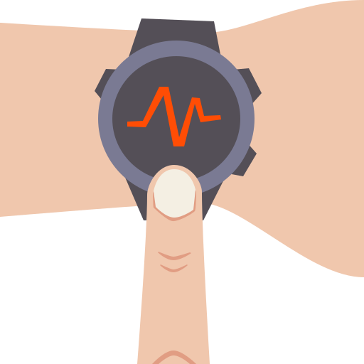

Signos vitales
Glucemia

Para la glucemia por lo general se ocupa un glucómetro que se puede adquirir en
cualquier farmacia o bien pedirlo a través de internet. Este aparato nos mostrará datos
muy importantes y puede medir de formas distintas, un valor que podemos medir antes de
comer y otro para después, estos valores no los dará en mg/dL que básicamente es la glucemia
o glucosa en suero.
Frecuencia cardiaca, oxígeno en sangre y el estrés

En cuanto a la frecuencia cardiaca, oxígeno en sangre y el estrés son medicines que
nos las puede proporcionar una pulsera inteligente, estas actualmente ya no tienen un costo tan
elevado y nos brinda medicines que nos pueden brindar información sobre como se encuentra nuestro
cuerpo. (Este campo a un le falta nutrirse con más datos e información para así poder determinar
su relación con la diabetes.)
Encuesta
En esta encuesta lo complicado seria contestar las preguntas relacionadas con la glucemia
ya que tal vez no todos tenemos un glucómetro en casa, por ello está a disposición lo síntomas más comunes
de las posibles variantes.
Nivel alto de azúcar en sangre (hiperglucemia)
Si tu nivel de glucosa sanguínea es demasiado alto, es posible que presentes lo siguiente:
- Aumento de la sed
- Micción frecuente
- Visión borrosa
- Cansancio o debilidad
- Dolor de cabeza
- Náuseas y vómitos
- Falta de aire
- Dolor estomacal
- Aliento con olor frutal
- Boca muy seca
Si cuenta con alguna de estas características considérelo a la hora de poner el nivel de glucemia.